This function plots the results of estimations (coefficients and confidence intervals). The function iplot restricts the output to variables created with i, either interactions with factors or raw factors.
coefplot(
object,
...,
style = NULL,
sd,
ci_low,
ci_high,
x,
x.shift = 0,
horiz = FALSE,
dict = getFixest_dict(),
keep,
drop,
order,
ci.width = "1%",
ci_level = 0.95,
add = FALSE,
pt.pch = c(20, 17, 15, 21, 24, 22),
pt.bg = NULL,
cex = 1,
pt.cex = cex,
col = 1:8,
pt.col = col,
ci.col = col,
lwd = 1,
pt.lwd = lwd,
ci.lwd = lwd,
ci.lty = 1,
grid = TRUE,
grid.par = list(lty = 3, col = "gray"),
zero = TRUE,
zero.par = list(col = "black", lwd = 1),
pt.join = FALSE,
pt.join.par = list(col = pt.col, lwd = lwd),
ci.join = FALSE,
ci.join.par = list(lwd = lwd, col = col, lty = 2),
ci.fill = FALSE,
ci.fill.par = list(col = "lightgray", alpha = 0.5),
ref = "auto",
ref.line = "auto",
ref.line.par = list(col = "black", lty = 2),
lab.cex,
lab.min.cex = 0.85,
lab.max.mar = 0.25,
lab.fit = "auto",
xlim.add,
ylim.add,
only.params = FALSE,
sep,
as.multiple = FALSE,
bg,
group = "auto",
group.par = list(lwd = 2, line = 3, tcl = 0.75),
main = "Effect on __depvar__",
value.lab = "Estimate and __ci__ Conf. Int.",
ylab = NULL,
xlab = NULL,
sub = NULL
)
iplot(
object,
...,
i.select = 1,
style = NULL,
sd,
ci_low,
ci_high,
x,
x.shift = 0,
horiz = FALSE,
dict = getFixest_dict(),
keep,
drop,
order,
ci.width = "1%",
ci_level = 0.95,
add = FALSE,
pt.pch = c(20, 17, 15, 21, 24, 22),
pt.bg = NULL,
cex = 1,
pt.cex = cex,
col = 1:8,
pt.col = col,
ci.col = col,
lwd = 1,
pt.lwd = lwd,
ci.lwd = lwd,
ci.lty = 1,
grid = TRUE,
grid.par = list(lty = 3, col = "gray"),
zero = TRUE,
zero.par = list(col = "black", lwd = 1),
pt.join = FALSE,
pt.join.par = list(col = pt.col, lwd = lwd),
ci.join = FALSE,
ci.join.par = list(lwd = lwd, col = col, lty = 2),
ci.fill = FALSE,
ci.fill.par = list(col = "lightgray", alpha = 0.5),
ref = "auto",
ref.line = "auto",
ref.line.par = list(col = "black", lty = 2),
lab.cex,
lab.min.cex = 0.85,
lab.max.mar = 0.25,
lab.fit = "auto",
xlim.add,
ylim.add,
only.params = FALSE,
sep,
as.multiple = FALSE,
bg,
group = "auto",
group.par = list(lwd = 2, line = 3, tcl = 0.75),
main = "Effect on __depvar__",
value.lab = "Estimate and __ci__ Conf. Int.",
ylab = NULL,
xlab = NULL,
sub = NULL
)Can be either: i) an estimation object (obtained for example from feols, ii) a list of estimation objects (several results will be plotted at once), iii) a matrix of coefficients table, iv) a numeric vector of the point estimates -- the latter requiring the extra arguments sd or ci_low and ci_high.
Other arguments to be passed to summary, if object is an estimation, and/or to the function plot or lines (if add = TRUE).
A character scalar giving the style of the plot to be used. You can set styles with the function setFixest_coefplot, setting all the default values of the function. If missing, then it switches to either "default" or "iplot", depending on the calling function.
The standard errors of the estimates. It may be missing.
If sd is not provided, the lower bound of the confidence interval. For each estimate.
If sd is not provided, the upper bound of the confidence interval. For each estimate.
The value of the x-axis. If missing, the names of the argument estimate are used.
Shifts the confidence intervals bars to the left or right, depending on the value of x.shift. Default is 0.
A logical scalar, default is FALSE. Whether to display the confidence intervals horizontally instead of vertically.
A named character vector or a logical scalar. It changes the original variable names to the ones contained in the dictionary. E.g. to change the variables named a and b3 to (resp.) “$log(a)$” and to “$bonus^3$”, use dict=c(a="$log(a)$",b3="$bonus^3$"). By default, it is equal to getFixest_dict(), a default dictionary which can be set with setFixest_dict. You can use dict = FALSE to disable it. By default dict modifies the entries in the global dictionary, to disable this behavior, use "reset" as the first element (ex: dict=c("reset", mpg="Miles per gallon")).
Character vector. This element is used to display only a subset of variables. This should be a vector of regular expressions (see regex help for more info). Each variable satisfying any of the regular expressions will be kept. This argument is applied post aliasing (see argument dict). Example: you have the variable x1 to x55 and want to display only x1 to x9, then you could use keep = "x[[:digit:]]$". If the first character is an exclamation mark, the effect is reversed (e.g. keep = "!Intercept" means: every variable that does not contain “Intercept” is kept). See details.
Character vector. This element is used if some variables are not to be displayed. This should be a vector of regular expressions (see regex help for more info). Each variable satisfying any of the regular expressions will be discarded. This argument is applied post aliasing (see argument dict). Example: you have the variable x1 to x55 and want to display only x1 to x9, then you could use drop = "x[[:digit:]]{2}". If the first character is an exclamation mark, the effect is reversed (e.g. drop = "!Intercept" means: every variable that does not contain “Intercept” is dropped). See details.
Character vector. This element is used if the user wants the variables to be ordered in a certain way. This should be a vector of regular expressions (see regex help for more info). The variables satisfying the first regular expression will be placed first, then the order follows the sequence of regular expressions. This argument is applied post aliasing (see argument dict). Example: you have the following variables: month1 to month6, then x1 to x5, then year1 to year6. If you want to display first the x's, then the years, then the months you could use: order = c("x", "year"). If the first character is an exclamation mark, the effect is reversed (e.g. order = "!Intercept" means: every variable that does not contain “Intercept” goes first). See details.
The width of the extremities of the confidence intervals. Default is 0.1.
Scalar between 0 and 1: the level of the CI. By default it is equal to 0.95.
Default is FALSE, if the intervals are to be added to an existing graph. Note that if it is the case, then the argument x MUST be numeric.
The patch of the coefficient estimates. Default is 1 (circle).
The background color of the point estimate (when the pt.pch is in 21 to 25). Defaults to NULL.
Numeric, default is 1. Expansion factor for the points
The size of the coefficient estimates. Default is the other argument cex.
The color of the points and the confidence intervals. Default is 1 ("black"). Note that you can set the colors separately for each of them with pt.col and ci.col.
The color of the coefficient estimates. Default is equal to the other argument col.
The color of the confidence intervals. Default is equal to the other argument col.
General line with. Default is 1.
The line width of the coefficient estimates. Default is equal to the other argument lwd.
The line width of the confidence intervals. Default is equal to the other argument lwd.
The line type of the confidence intervals. Default is 1.
Logical, default is TRUE. Whether a grid should be displayed. You can set the display of the grid with the argument grid.par.
List. Parameters of the grid. The default values are: lty = 3 and col = "gray". You can add any graphical parameter that will be passed to abline. You also have two additional arguments: use horiz = FALSE to disable the horizontal lines, and use vert = FALSE to disable the vertical lines. Eg: grid.par = list(vert = FALSE, col = "red", lwd = 2).
Logical, default is TRUE. Whether the 0-line should be emphasized. You can set the parameters of that line with the argument zero.par.
List. Parameters of the zero-line. The default values are col = "black" and lwd = 1. You can add any graphical parameter that will be passed to abline. Example: zero.par = list(col = "darkblue", lwd = 3).
Logical, default is FALSE. If TRUE, then the coefficient estimates are joined with a line.
List. Parameters of the line joining the coefficients. The default values are: col = pt.col and lwd = lwd. You can add any graphical parameter that will be passed to lines. Eg: pt.join.par = list(lty = 2).
Logical default to FALSE. Whether to join the extremities of the confidence intervals. If TRUE, then you can set the graphical parameters with the argument ci.join.par.
A list of parameters to be passed to lines. Only used if ci.join=TRUE. By default it is equal to list(lwd = lwd, col = col, lty = 2).
Logical default to FALSE. Whether to fille the confidence intervals with a color. If TRUE, then you can set the graphical parameters with the argument ci.fill.par.
A list of parameters to be passed to polygon. Only used if ci.fill=TRUE. By default it is equal to list(col = "lightgray", alpha = 0.5). Note that alpha is a special parameter that adds transparency to the color (ranges from 0 to 1).
Used to add points equal to 0 (typically to visualize reference points). Either: i) "auto" (default), ii) a character vector of length 1, iii) a list of length 1, iv) a named integer vector of length 1, or v) a numeric vector. By default, in iplot, if the argument ref has been used in the estimation, these references are automatically added. If ii), ie a character scalar, then that coefficient equal to zero is added as the first coefficient. If a list or a named integer vector of length 1, then the integer gives the position of the reference among the coefficients and the name gives the coefficient name. A non-named numeric value of ref only works if the x-axis is also numeric (which can happen in iplot).
Logical or numeric, default is "auto", whose behavior depends on the situation. It is TRUE only if: i) interactions are plotted, ii) the x values are numeric and iii) a reference is found. If TRUE, then a vertical line is drawn at the level of the reference value. Otherwise, if numeric a vertical line will be drawn at that specific value.
List. Parameters of the vertical line on the reference. The default values are: col = "black" and lty = 2. You can add any graphical parameter that will be passed to abline. Eg: ref.line.par = list(lty = 1, lwd = 3).
The size of the labels of the coefficients. Default is missing. It is automatically set by an internal algorithm which can go as low as lab.min.cex (another argument).
The minimum size of the coefficients labels, as set by the internal algorithm. Default is 0.85.
The maximum size the left margin can take when trying to fit the coefficient labels into it (only when horiz = TRUE). This is used in the internal algorithm fitting the coefficient labels. Default is 0.25.
The method to fit the coefficient labels into the plotting region (only when horiz = FALSE). Can be "auto" (the default), "simple", "multi" or "tilted". If "simple", then the classic axis is drawn. If "multi", then the coefficient labels are fit horizontally across several lines, such that they don't collide. If "tilted", then the labels are tilted. If "auto", an automatic choice between the three is made.
A numeric vector of length 1 or 2. It represents an extension factor of xlim, in percentage. Eg: xlim.add = c(0, 0.5) extends xlim of 50% on the right. If of length 1, positive values represent the right, and negative values the left (Eg: xlim.add = -0.5 is equivalent to xlim.add = c(0.5, 0)).
A numeric vector of length 1 or 2. It represents an extension factor of ylim, in percentage. Eg: ylim.add = c(0, 0.5) extends ylim of 50% on the top. If of length 1, positive values represent the top, and negative values the bottom (Eg: ylim.add = -0.5 is equivalent to ylim.add = c(0.5, 0)).
Logical, default is FALSE. If TRUE no graphic is displayed, only the values of x and y used in the plot are returned.
The distance between two estimates -- only when argument object is a list of estimation results.
Logical: default is FALSE. Only when object is a single estimation result: whether each coefficient should have a different color, line type, etc. By default they all get the same style.
Background color for the plot. By default it is white.
A list, default is missing. Each element of the list reports the coefficients to be grouped while the name of the element is the group name. Each element of the list can be either: i) a character vector of length 1, ii) of length 2, or ii) a numeric vector. If equal to: i) then it is interpreted as a pattern: all element fitting the regular expression will be grouped (note that you can use the special character "^^" to clean the beginning of the names, see example), if ii) it corrsponds to the first and last elements to be grouped, if iii) it corresponds to the coefficients numbers to be grouped. If equal to a character vector, you can use a percentage to tell the algorithm to look at the coefficients before aliasing (e.g. "%varname"). Example of valid uses: group=list(group_name=\"pattern\"), group=list(group_name=c(\"var_start\", \"var_end\")), group=list(group_name=1:2)). See details.
A list of parameters controlling the display of the group. The parameters controlling the line are: lwd, tcl (length of the tick), line.adj (adjustment of the position, default is 0), tick (whether to add the ticks), lwd.ticks, col.ticks. Then the parameters controlling the text: text.adj (adjustment of the position, default is 0), text.cex, text.font, text.col.
The title of the plot. Default is "Effect on __depvar__". You can use the special variable __depvar__ to set the title (useful when you set the plot default with setFixest_coefplot).
The label to appear on the side of the coefficient values. If horiz = FALSE, the label appears in the y-axis. If horiz = TRUE, then it appears on the x-axis. The default is equal to "Estimate and __ci__ Conf. Int.", with __ci__ a special variable giving the value of the confidence interval.
The label of the y-axis, default is NULL. Note that if horiz = FALSE, it overrides the value of the argument value.lab.
The label of the x-axis, default is NULL. Note that if horiz = TRUE, it overrides the value of the argument value.lab.
A subtitle, default is NULL.
Integer scalar, default is 1. In iplot, used to select which variable created with i() to select. Only used when there are several variables created with i. This is an index, just try increasing numbers to hopefully obtain what you want. Note that it works much better when the variables are "pure" i() variables and not interacted with other variables. For example: i(species, x1) is good while i(species):x1 isn't. The latter will also work but the index may feel weird in case there are many i() variables.
iplot: Plots the coefficients generated with i()
The function coefplot dispose of many arguments to parametrize the plots. Most of these arguments can be set once an for all using the function setFixest_coefplot. See Example 3 below for a demonstration.
The function iplot restricts coefplot to interactions or factors created with the function i. Only one of the i-variables will be plotted at a time. If you have several i-variables, you can navigate through them with the i.select argument.
The argument i.select is an index that will go through all the i-variables. It will work well if the variables are pure, meaning not interacted with other variables. If the i-variables are interacted, the index may have an odd behavior but will (in most cases) work all the same, just try some numbers up until you (hopefully) obtain the graph you want.
Note, importantly, that interactions of two factor variables are (in general) disregarded since they would require a 3-D plot to be properly represented.
The arguments keep, drop and order use regular expressions. If you are not aware of regular expressions, I urge you to learn it, since it is an extremely powerful way to manipulate character strings (and it exists across most programming languages).
For example drop = "Wind" would drop any variable whose name contains "Wind". Note that variables such as "Temp:Wind" or "StrongWind" do contain "Wind", so would be dropped. To drop only the variable named "Wind", you need to use drop = "^Wind$" (with "^" meaning beginning, resp. "$" meaning end, of the string => this is the language of regular expressions).
Although you can combine several regular expressions in a single character string using pipes, drop also accepts a vector of regular expressions.
You can use the special character "!" (exclamation mark) to reverse the effect of the regular expression (this feature is specific to this function). For example drop = "!Wind" would drop any variable that does not contain "Wind".
You can use the special character "%" (percentage) to make reference to the original variable name instead of the aliased name. For example, you have a variable named "Month6", and use a dictionary dict = c(Month6="June"). Thus the variable will be displayed as "June". If you want to delete that variable, you can use either drop="June", or drop="%Month6" (which makes reference to its original name).
The argument order takes in a vector of regular expressions, the order will follow the elements of this vector. The vector gives a list of priorities, on the left the elements with highest priority. For example, order = c("Wind", "!Inter", "!Temp") would give highest priorities to the variables containing "Wind" (which would then appear first), second highest priority is the variables not containing "Inter", last, with lowest priority, the variables not containing "Temp". If you had the following variables: (Intercept), Temp:Wind, Wind, Temp you would end up with the following order: Wind, Temp:Wind, Temp, (Intercept).
See setFixest_coefplot to set the default values of coefplot, and the estimation functions: e.g. feols, fepois, feglm, fenegbin.
#
# Example 1: Stacking two sets of results on the same graph
#
# Estimation on Iris data with one fixed-effect (Species)
est = feols(Petal.Length ~ Petal.Width + Sepal.Length +
Sepal.Width | Species, iris)
# Estimation results with clustered standard-errors
# (the default when fixed-effects are present)
est_clu = summary(est)
# Now with "regular" standard-errors
est_std = summary(est, se = "iid")
# You can plot the two results at once
coefplot(list(est_clu, est_std))
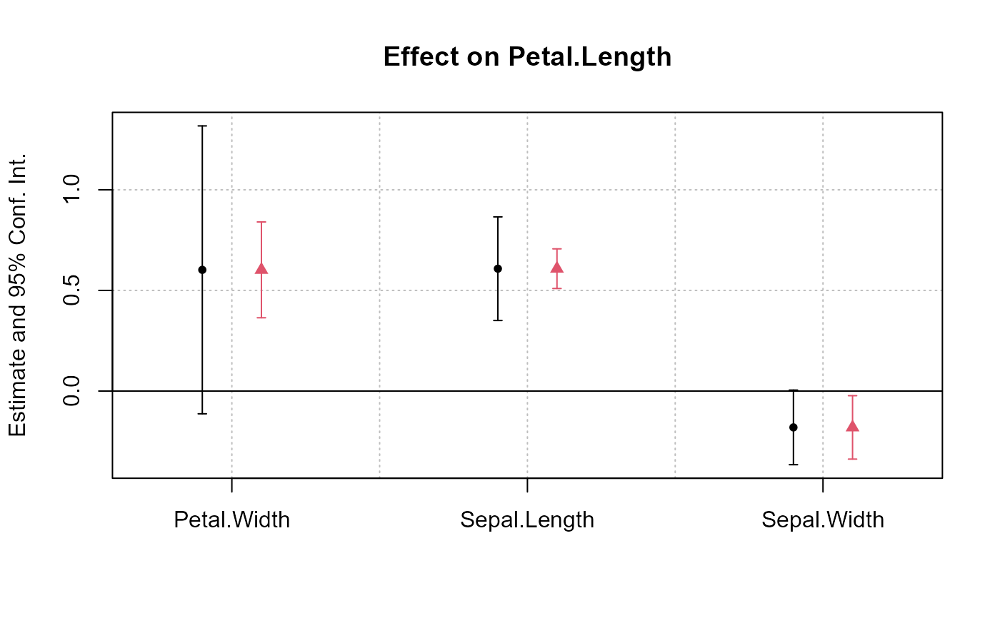
# Alternatively, you can use the argument x.shift
# to do it sequentially:
# First graph with clustered standard-errors
coefplot(est, x.shift = -.2)
# 'x.shift' was used to shift the coefficients on the left.
# Second set of results: this time with
# standard-errors that are not clustered.
coefplot(est, se = "iid", x.shift = .2,
add = TRUE, col = 2, ci.lty = 2, pch=15)
# Note that we used 'se', an argument that will
# be passed to summary.fixest
legend("topright", col = 1:2, pch = 20, lwd = 1, lty = 1:2,
legend = c("Clustered", "IID"), title = "Standard-Errors")
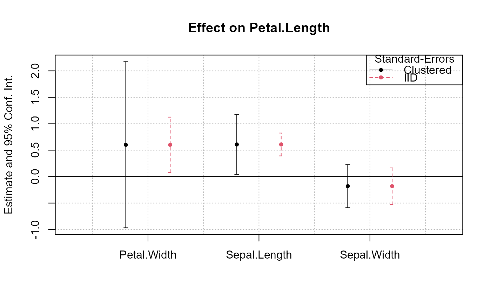
#
# Example 2: Interactions
#
# Now we estimate and plot the "yearly" treatment effects
data(base_did)
base_inter = base_did
# We interact the variable 'period' with the variable 'treat'
est_did = feols(y ~ x1 + i(period, treat, 5) | id+period, base_inter)
# In the estimation, the variable treat is interacted
# with each value of period but 5, set as a reference
# coefplot will show all the coefficients:
coefplot(est_did)
# Note that the grouping of the coefficients is due to 'group = "auto"'
# If you want to keep only the coefficients
# created with i() (ie the interactions), use iplot
iplot(est_did)
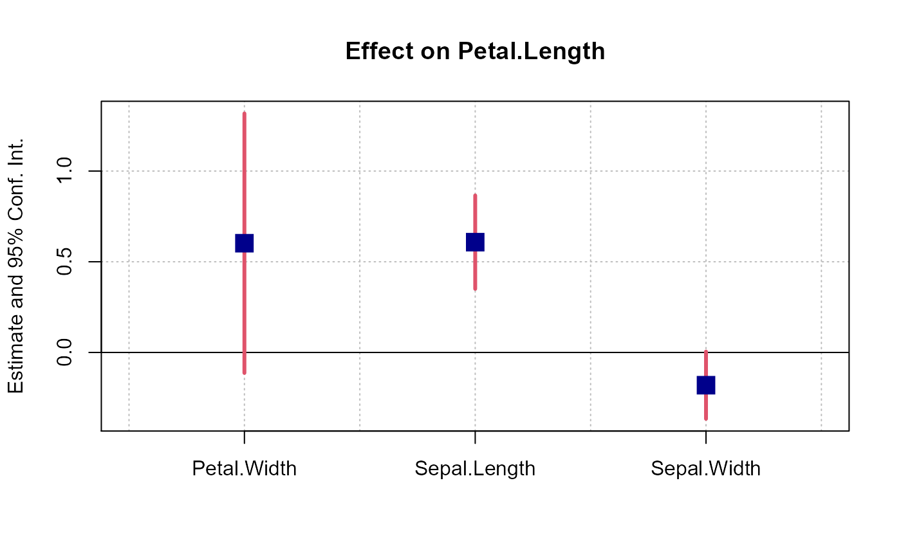
# When estimations contain interactions, as before,
# the default behavior of coefplot changes,
# it now only plots interactions:
coefplot(est_did)
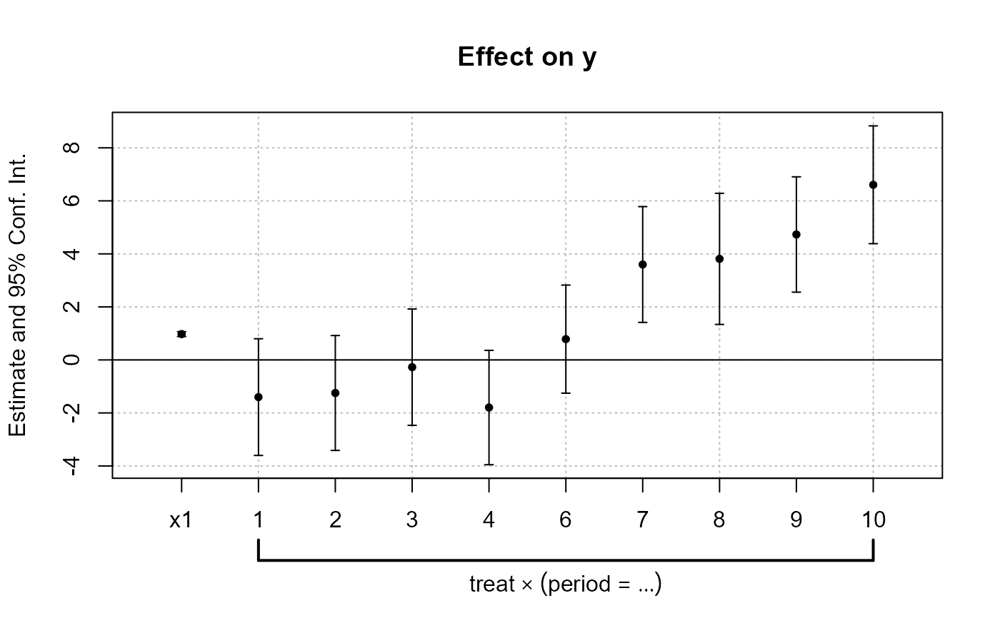
# We can see that the graph is different from before:
# - only interactions are shown,
# - the reference is present,
# => this is fully flexible
iplot(est_did, ref.line = FALSE, pt.join = TRUE)
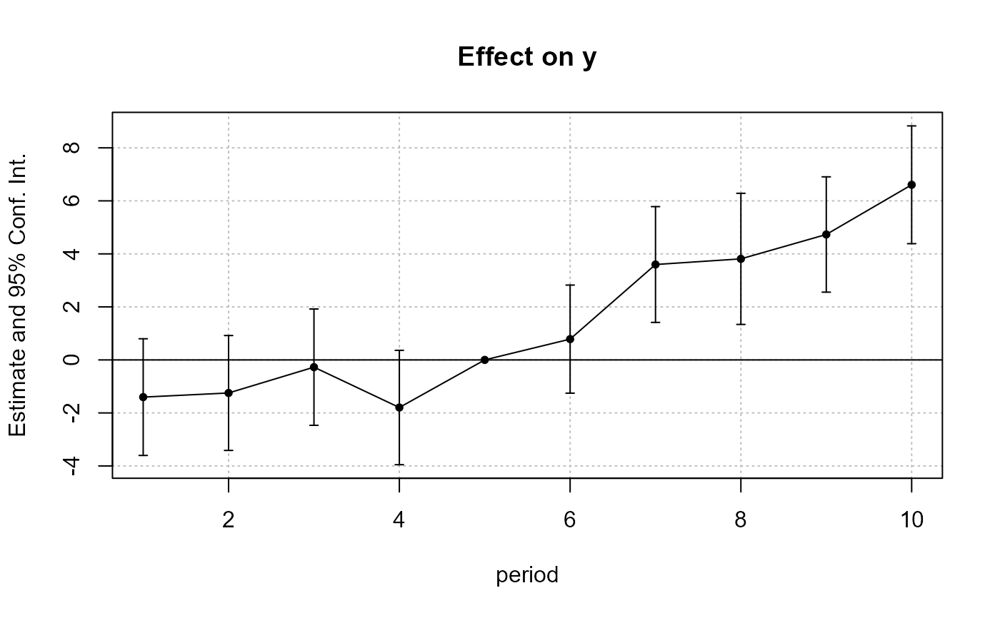
#
# What if the interacted variable is not numeric?
# Let's create a "month" variable
all_months = c("aug", "sept", "oct", "nov", "dec", "jan",
"feb", "mar", "apr", "may", "jun", "jul")
base_inter$period_month = all_months[base_inter$period]
# The new estimation
est = feols(y ~ x1 + i(period_month, treat, "oct") | id+period, base_inter)
# Since 'period_month' of type character, coefplot sorts it
iplot(est)
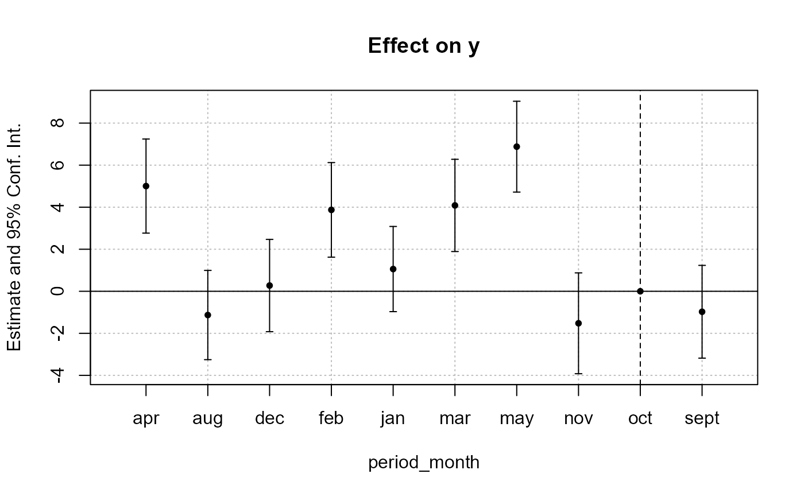
# To respect a plotting order, use a factor
base_inter$month_factor = factor(base_inter$period_month, levels = all_months)
est = feols(y ~ x1 + i(month_factor, treat, "oct") | id+period, base_inter)
iplot(est)
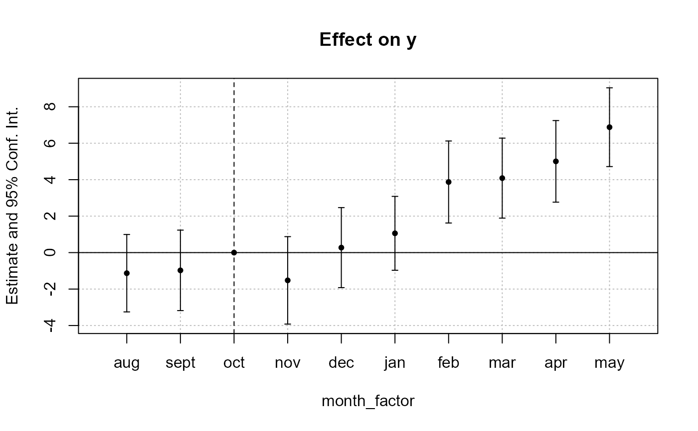
#
# Example 3: Setting defaults
#
# coefplot has many arguments, which makes it highly flexible.
# If you don't like the default style of coefplot. No worries,
# you can set *your* default by using the function
# setFixest_coefplot()
dict = c("Petal.Length"="Length (Petal)", "Petal.Width"="Width (Petal)",
"Sepal.Length"="Length (Sepal)", "Sepal.Width"="Width (Sepal)")
setFixest_coefplot(ci.col = 2, pt.col = "darkblue", ci.lwd = 3,
pt.cex = 2, pt.pch = 15, ci.width = 0, dict = dict)
est = feols(Petal.Length ~ Petal.Width + Sepal.Length +
Sepal.Width + i(Species), iris)
# And that's it
coefplot(est)
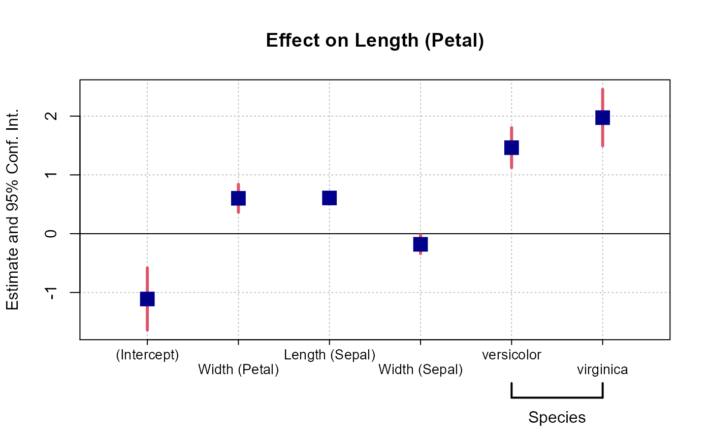
# You can set separate default values for iplot
setFixest_coefplot("iplot", pt.join = TRUE, pt.join.par = list(lwd = 2, lty = 2))
iplot(est)
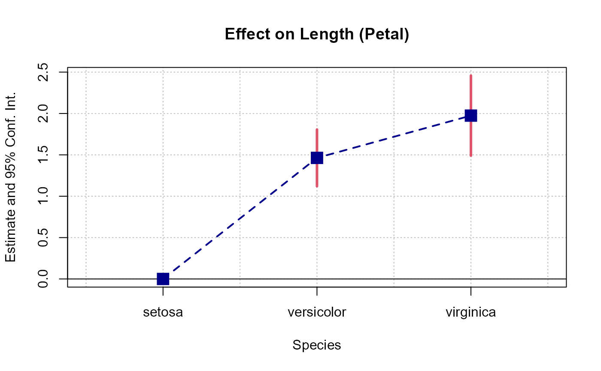
# To reset to the default settings:
setFixest_coefplot("all", reset = TRUE)
coefplot(est)
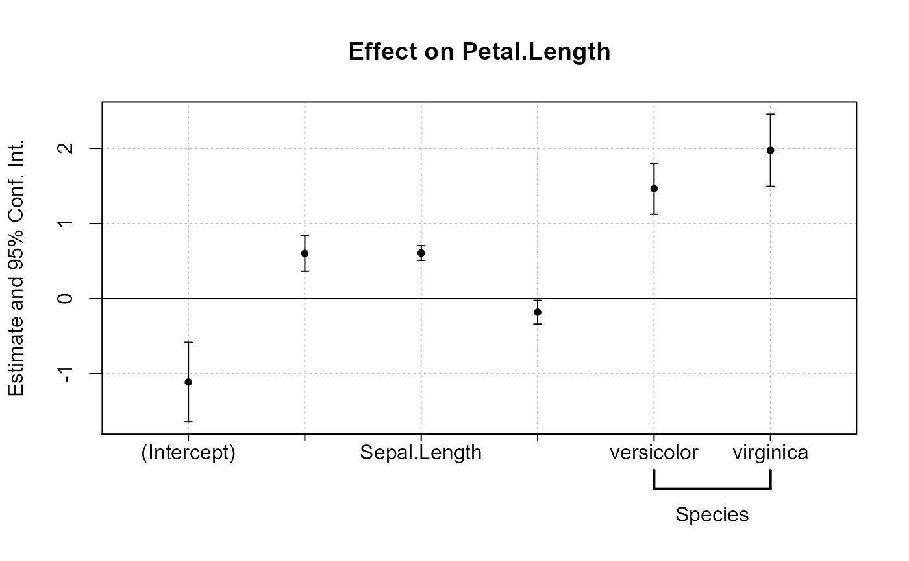
#
# Example 4: group + cleaning
#
# You can use the argument group to group variables
# You can further use the special character "^^" to clean
# the beginning of the coef. name: particularly useful for factors
est = feols(Petal.Length ~ Petal.Width + Sepal.Length +
Sepal.Width + Species, iris)
# No grouping:
coefplot(est)
# now we group by Sepal and Species
coefplot(est, group = list(Sepal = "Sepal", Species = "Species"))
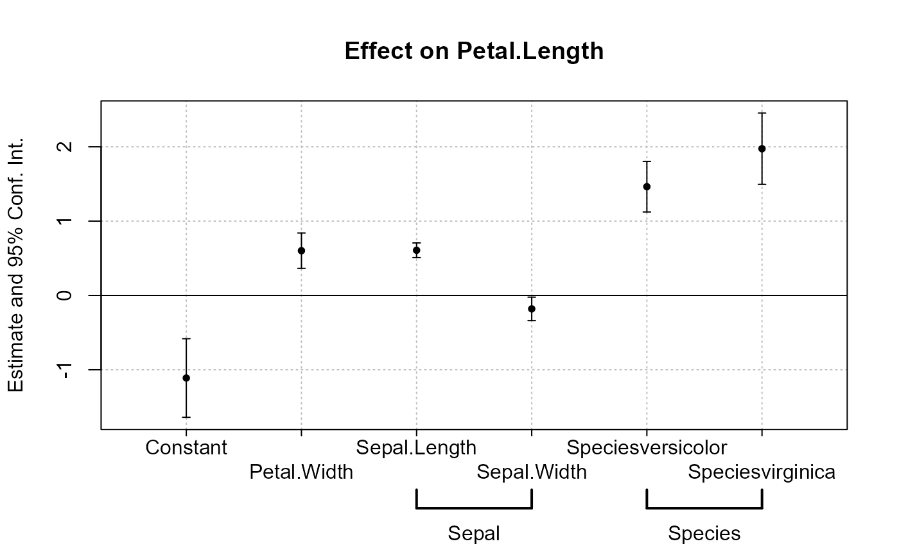
# now we group + clean the beginning of the names using the special character ^^
coefplot(est, group = list(Sepal = "^^Sepal.", Species = "^^Species"))
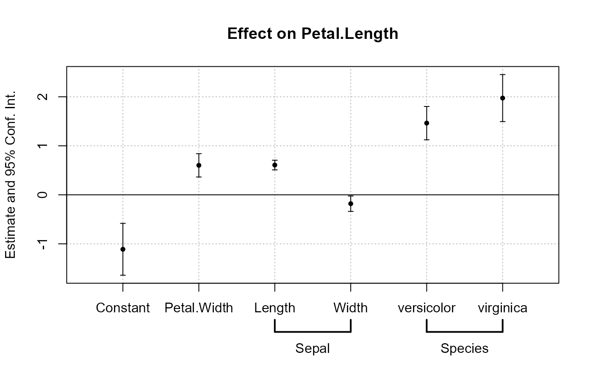